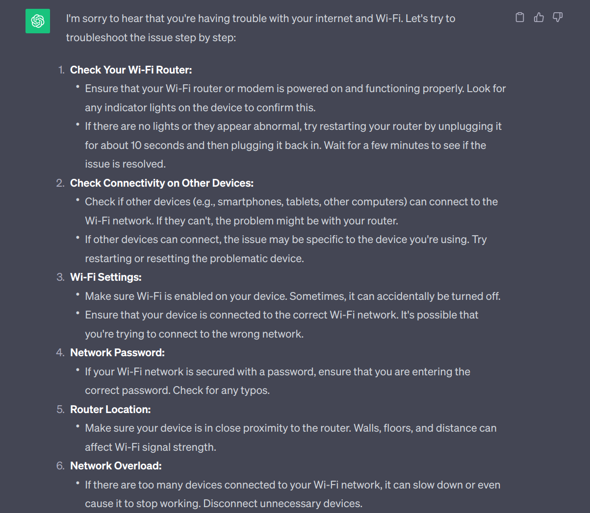
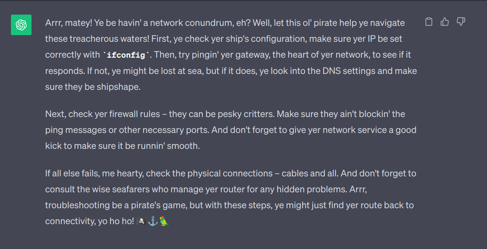
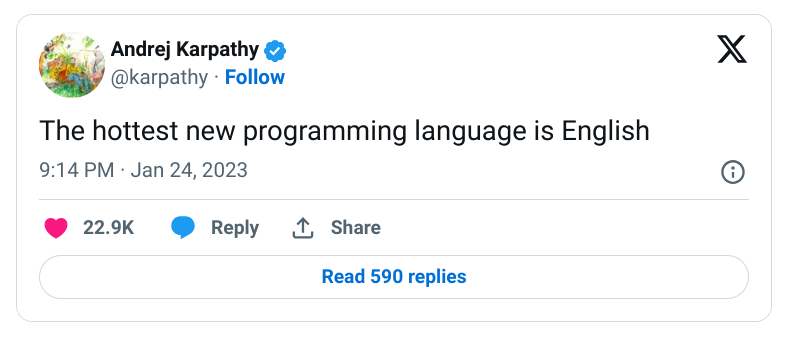

class: right, bottom, white, first-slide background-image: url(ai-pics-intro.png) background-size: contain # ~~ChatGPT~~ Generative AI # fine-tune your prompts ## Tomas Tomecek ??? --- class: middle # Danger! .left-column[ * Don't share your personal data! * Don't share company data! * [Samsung bans use of generative AI [...] after April internal data leak](https://techcrunch.com/2023/05/02/samsung-bans-use-of-generative-ai-tools-like-chatgpt-after-april-internal-data-leak) ] .right-column[ <img src="danger.png" width="480"> ] <div class="footer small middle"> Picture prompt: "danger" </div> ??? not approved --- # Internet doesn't work, wifi is broken. --  --- .left-column[ # Basic facts first * Context * System * Assistant * User ] .right-column[ ] <div class="footer small middle"> Picture prompt: "a picture with basic materials such as wood, stone, hay, clay, water, fire" </div> ??? System = you can pick an assistant you want to call to Context: - circumstances - conditions - surroundings - factors - state of affairs - situation - environment - milieu - setting - background - backdrop - scene --- # Better prompt -- <blockquote> You are an expert network engineer. I have a network connectivity problem on my Fedora Linux laptop. All ping command invocations fail with "No route to host". How can I troubleshoot this issue? Respond only with a short paragraph of text, thank you. </blockquote> --- # And a better answer To troubleshoot the "No route to host" issue on your Fedora Linux laptop, follow these steps: 1. **Check Network Configuration**: Ensure your network settings, such as IP address, subnet mask, and gateway, are correctly configured. Use the `ifconfig` and `route -n` commands to verify. 2. **Ping Gateway**: Confirm that you can ping your router or gateway using its IP address. If this works, it indicates a problem beyond the local network. 3. **DNS Configuration**: Verify your DNS settings are correct. Try pinging a remote server using its IP address instead of hostname. 4. **Firewall Rules**: Check your firewall rules using `iptables` or `firewalld`. Ensure that they are not blocking ICMP packets (ping) or necessary ports. 5. **Network Service**: Ensure that the network service (`NetworkManager` or `systemd-networkd`) is running and managing your network interfaces properly. --- # Best answer (as a drunken pirate)  --- class: middle  ??? polish grammar and writing You are an expert editor. Please review the following snippet: API --- # OpenAI API ```python analysis_response = openai.ChatCompletion.create( model="gpt-3.5-turbo", messages= [ {"role": "system", "content": SYSTEM_PROMPT}, {"role": "user", "content": USER_PROMPT} ], temperature=1.0, top_p=1.0, ) ``` ??? hallucinations: range --- class: middle # The end .left-column[ * Art pictures created with [midjourney](https://www.midjourney.com/) * <span class="fa fa-github-square"></span> [github.com/TomasTomecek/speaks](https://github.com/TomasTomecek/speaks) * <span class="fa fa-globe"></span> [@TomasTomec@fosstodon.org](https://fosstodon.org/@TomasTomec) * <span class="fa fa-youtube-square"></span> [State of GPT | YouTube](https://www.youtube.com/watch?v=bZQun8Y4L2A) * <span class="fa fa-globe"></span> [15 Tips to Become a Better Prompt...]( https://techcommunity.microsoft.com/t5/azure-ai-services-blog/15-tips-to-become-a-better-prompt-engineer-for-generative-ai/ba-p/3882935) ] .right-column[ ] <div class="footer small middle"> Picture prompt: "a picture of a cat that waves goodbye" </div>